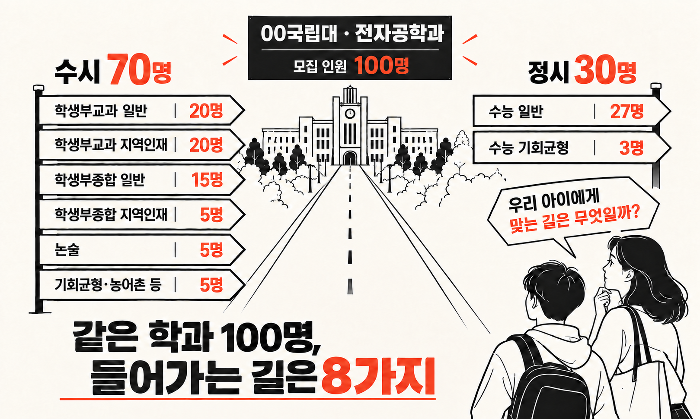

두 아이의 입시를 겪은 엄마가 보내는 입시 레터
2028, 입시가 또 바뀝니다.
- 내신
9등급→5등급 - 수능
선택과목→통합형 - 고교
정해진 시간표→고교학점제
무엇부터 알아야 할지, 한 달에 두 번 정리해 드립니다.
왜 입시메이트가 필요할까요?
가고 싶은 학과는 하나인데,
들어가는 길은 여러 개입니다.

공식 자료로 우리 아이 길을 찾습니다
메일은 이렇게 옵니다.
일정 · 뉴스 · 할 일 · AI, 한 통에 네 가지.
이달의 주요 일정
- 11.192027학년도 수능 (학교가 시험장이면 휴업)
- 학년 말2학년 학생부 기록 마감 전 함께 읽어 보기
이달의 핫 뉴스
서울대, 2028 수시 ‘역량평가 면접’ 예시 문항 공개
이달 우리 집 해야 할 일
- 학생부를 아이와 함께 열람하기
- 관심 대학 두 곳의 전형 표시해 보기
- 겨울방학 탐구 하나 정하기
AI를 활용해 보아요
이 활동에서 더 궁금해질 수 있는 질문 5개를 만들어 줘. 정답은 알려 주지 말고, 질문과 확인 방법만 알려 줘.
아이가 해 온 활동을,
AI와 함께 한 걸음 더.
- 1돌아보기
이번 학기 활동을 아이 말로
- 2넓히기
궁금한 점을 AI와 탐구 주제로
- 3말해 보기
AI가 묻고 아이가 답하는 면접 연습
“정보는 많은데,
우리 아이는 무엇을 해야 할까.”
월간 구독
20,000원 / 월
- 연간220,000원2만원 절약
- 오픈 전 신청2회 무료자동 결제 없음
- 학부모 상담준비 중자세히 ↗
한 달, 두 번.
무료로 먼저
받아 보세요.
이메일과 학년만 남기면 끝.
짧게 답할게요.
입시메이트는 어떤 서비스인가요?+
두 아이의 입시를 겪은 엄마가 고1·고2 학부모에게 보내는 입시 레터입니다. 한 달에 두 번, 이달의 주요 일정과 핫 뉴스, 우리 집 해야 할 일, 아이의 활동을 탐구와 면접으로 잇는 AI 활용법을 이메일로 보내 드립니다. 월 20,000원이며 오픈 전 신청하면 2회를 무료로 받습니다.
2028 대입 개편, 무엇이 달라지나요?+
2025년 고1 입학생부터 내신 상대평가가 9등급에서 5등급으로 바뀌고, 수능은 국어·수학 선택과목이 없어지며 탐구는 통합사회·통합과학으로 치르는 통합형으로 바뀝니다. 대학별 세부 전형은 각 대학의 2028학년도 전형 시행계획에서 확인해야 합니다.
AI를 한 번도 써 보지 않았어도 괜찮을까요?+
괜찮습니다. 매번 복사해서 붙여 넣을 수 있는 질문 예시와 사용 순서를 함께 보냅니다. 무료로 쓸 수 있는 AI 도구를 기준으로 안내합니다.
학생부를 대신 써 주거나 첨삭해 주나요?+
아니요. 학생부 문구를 대신 만들거나 학교·선생님께 특정 내용 기재를 요청하는 방법은 다루지 않습니다. 아이가 실제로 한 활동을 스스로 돌아보고 넓히는 방법을 안내합니다.
중3이나 고3도 받을 수 있나요?+
처음에는 2028학년도 이후 새 체제를 처음 겪는 고1·고2부터 시작합니다. 다른 학년은 준비되는 대로 공지사항으로 알려 드립니다.
개인 상담도 받을 수 있나요?+
학생부를 받지 않는 방식의 학부모 상담을 준비하고 있습니다. 관련 규정을 확인한 뒤 오픈하며, 공지사항으로 안내합니다.
2028 합격 가능성을 예측하나요?+
새 체제의 결과를 확정적으로 예측하거나 합격을 보장하지 않습니다. 발표된 제도와 공식 전형 자료를 기준으로 준비할 일을 정리합니다.